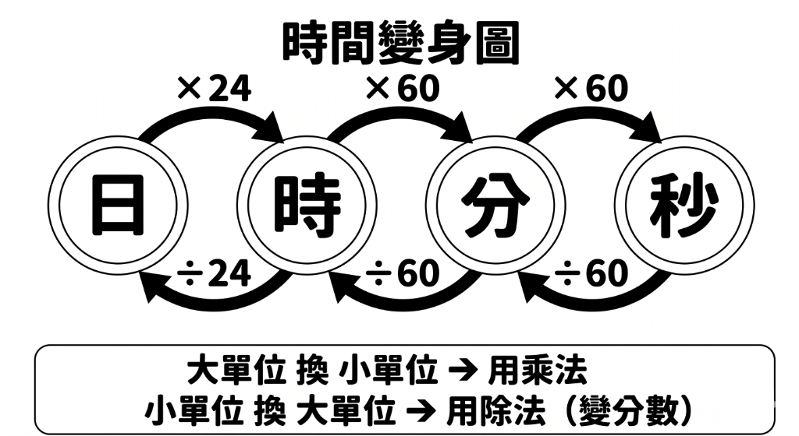

五年級下學期數學複營
START哈囉！歡迎來到五年級數學複習營！
這裡有有趣的圖形、好玩的滑桿，還有會唱歌的星星喔！
在開始之前，你可以點擊左邊的喇叭，讓電腦**唸題目**給你聽！
點擊下方的「下一頁」或鍵盤的「右方向鍵」開始吧！
整數、小數除以整數
單元 6當我們算除法除不盡的時候，記得：「小數點後面有無限多個0」。
1
除到個位之後，在商的位置點上小數點，商與被除數的小數點要上下對齊！
2
在被除數的後面補上 0，繼續往下除，直到除盡（餘數為0）為止。
常用的分數和小數對應（點擊卡片看提示）：
1/2
= 0.5
1/4
= 0.25
3/4
= 0.75
1/8
= 0.125
範例：15 ÷ 40 = ?
0.375
40 ) 15.000
12 0
3 00
2 80
200
200
0
單元六隨堂測驗
測驗 6讀取問題中...
作答進度
第 1 / 5 題
你的得分
0
立體圖形表面積
單元 7表面積，就是立體圖形外面所有面的面積加起來！
正方
正方體有 6 個大小相同的面：
邊長 × 邊長 × 6
長方
長方體有 3 組互相對稱的面：
(長×寬 + 寬×高 + 長×高) × 2
切割
木塊從中間鋸一刀，會增加 2 個側面的面積喔！
前
後
左
右
上
下
單元七隨堂測驗
測驗 7讀取問題中...
作答進度
第 1 / 5 題
你的得分
0
比率與百分率
單元 8比率是部分占全體的多少。整體代表 100%。
互換公式與技巧：
- 小數 ➔ 百分率：小數 × 100 (小數點向右移 2 位)
- 百分率 ➔ 小數：百分率 ÷ 100 (小數點向左移 2 位)
- 折扣：「打八五折」代表付 85%；「30% off」代表少付 30%，也就是付 70%。
0
.
7
8
%
拖動滑桿看格數與百分率：
格數：45/100
百分率：45%
單元八隨堂測驗
測驗 8讀取問題中...
作答進度
第 1 / 5 題
你的得分
0
時間的乘法與除法
單元 9時間計算是以「60 進位制」（1時=60分，1分=60秒）進行！
乘
時與分分開計算。分鐘計算完後滿 60 分鐘，往小時進位：
60 分 ➔ 1 小時
除
除不盡的時，乘以 60 換成分鐘，加到後面繼續除：
1 小時 ➔ 60 分鐘
範例：2小時 25分 × 3
2 時
25 分
× 3 =
6 時
75 分
(75分 超過60分了！)
7 時
15 分
✓ 完成！

時間進率關係：日 ⇄ 時 ⇄ 分 ⇄ 秒 (進率：24, 60, 60)
單元九隨堂測驗
測驗 9讀取問題中...
作答進度
第 1 / 5 題
你的得分
0
生活大單位與線對稱
單元 10生活中大單位的換算口訣：「大換小用乘法、小換大用除法」！
面積
公畝、公頃、平方公里以 100倍 進位：
1 平方公里 (km²) ➔ 100 公頃 (ha) ➔ 10000 公畝 (a)
重量
公噸與公斤以 1000倍 進位：
1 公噸 (t) = 1000 公斤 (kg)
對稱鏡像挑戰（點選左半側，右側鏡像塗色）：

1公頃的面積和邊長100公尺的正方形面積一樣大，1公頃＝100公畝＝10000平方公尺。
單元十隨堂測驗
測驗 10讀取問題中...
作答進度
第 1 / 5 題
你的得分
0
恭喜完成複習！
FINISH
你太棒了！完成了國小五下數學 6-10 單元的總複習！
多重感官與互動練習能幫助你的大腦更好記住數學規律。繼續保持好奇心，數學其實很有趣喔！